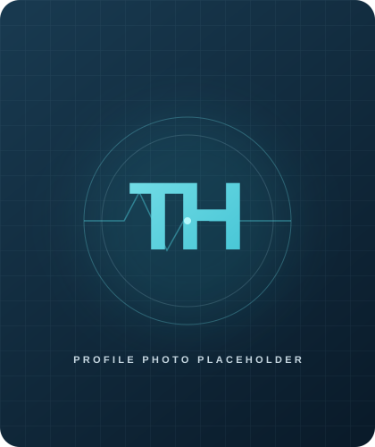
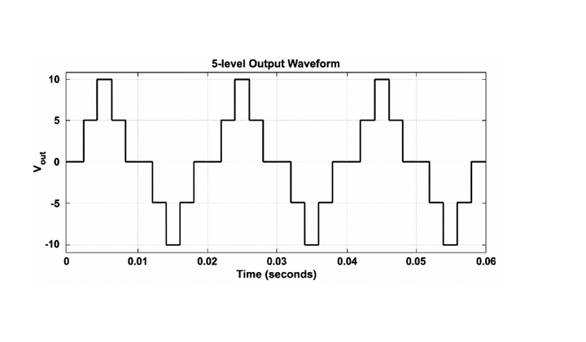
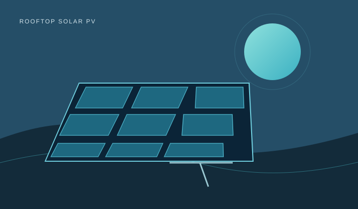
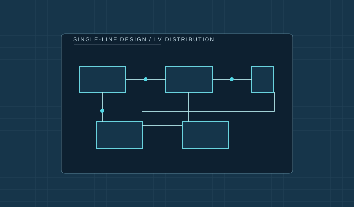
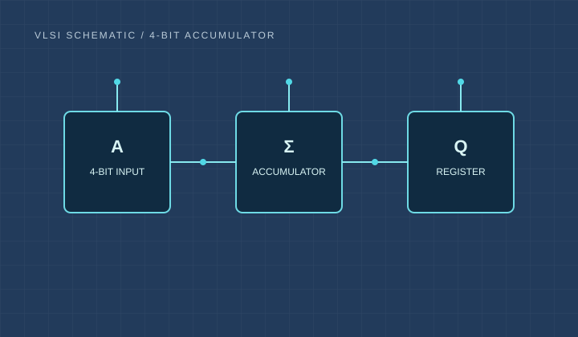
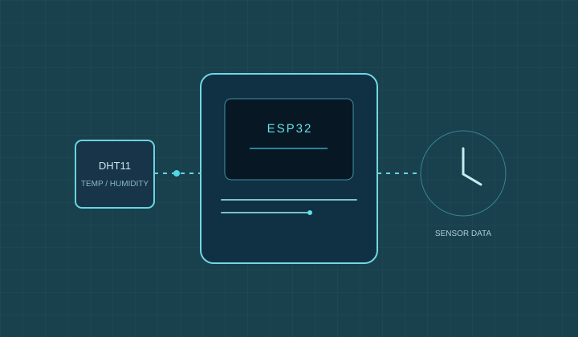
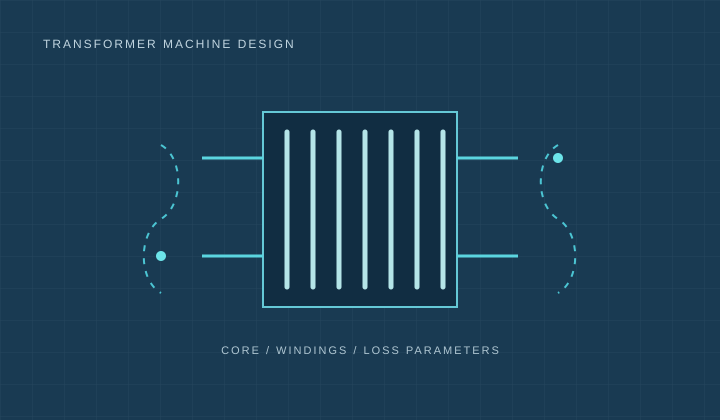

Electrical & Electronic Engineering Graduate
Tasneemul
Hasan
Exploring how power electronics and renewable energy can shape a more resilient electrical future.

POWERING IDEAS
WITH PURPOSE
WITH PURPOSE
POWER SYSTEMS
RENEWABLE ENERGY
01 A little about me
Curiosity,
grounded in engineering.
I’m an Electrical and Electronic Engineering graduate from Chittagong University of Engineering and Technology (CUET), where I completed my B.Sc. with a CGPA of 3.68/4.00 in 2026.
My academic interests center on power electronics, renewable energy, and the design of practical electrical systems. Through coursework, simulation, and project work, I’ve explored multilevel inverters, solar PV performance, embedded systems, and electrical design.
I’m interested in thoughtful, reliable engineering—from understanding a circuit’s behavior to considering how energy systems connect with the wider grid.
Let’s connect
CURRENT FOCUS
- Power Electronics
- Renewable Energy
- Solar PV Systems
- Embedded Systems
02 Tools of the trade
Technical toolkit.
Software and methods used across my engineering coursework and projects.
Programming & Embedded
Design & Productivity
Analysis & Communication
03 Selected academic work
Projects with
purpose.
A selection of academic projects exploring energy conversion, system design, and embedded applications.

01 / POWER ELECTRONICSPOWER ELECTRONICS
Flying Capacitor Clamped Multilevel Inverter Using FFS Method
Compared five- and seven-level FCC inverters using FFS control; the thesis reports filtered THD of 4.19% and 2.26%, with five-level circuit validation in Proteus.
- MATLAB/Simulink
- Proteus

02 / RENEWABLE ENERGYRENEWABLE ENERGY
Solar PV System Design & Yield Analysis
Simulated rooftop solar PV performance, exploring module tilt, inverter selection, and annual energy output.
- PVsyst
- Solar PV

03 / ELECTRICAL DESIGNELECTRICAL DESIGN
Electrical Service Design for Gated Residential Community
Created single-line diagrams and developed emergency layouts and conductor sizing.
- AutoCAD
- System Design

04 / DIGITAL DESIGNDIGITAL DESIGN
VLSI Design of 4-bit Accumulator
Implemented schematic and layout design and verified DRC and LVS compliance.
- Cadence
- VLSI

05 / EMBEDDED SYSTEMSEMBEDDED SYSTEMS
Air Pollution Tracker Using ESP32
Built an ESP32-based project using a DHT11 sensor for temperature and humidity sensing.
- ESP32
- DHT11
- Arduino

06 / ELECTRICAL MACHINESELECTRICAL MACHINES
Transformer Machine Design
Worked through transformer core dimensions, winding specifications, and loss parameters.
- Machine Design
- Analysis
04 Academic background
Education &
foundation.
2022 — 2026
BACHELOR OF SCIENCE
B.Sc. in Electrical and Electronic Engineering
Chittagong University of Engineering and Technology (CUET)
3.68/ 4.00CGPA
2019
HIGHER SECONDARY CERTIFICATE
HSC
5.00/ 5.00GPA
2017
SECONDARY SCHOOL CERTIFICATE
SSC
5.00/ 5.00GPA
05 Learning beyond the classroom
Industrial training.
Site visits that connected power-system concepts with generation and grid infrastructure.
THERMAL GENERATION
Raozan Power Plant
Practical exposure to thermal power generation, plant equipment, turbine-generator operation, and the role of generation in grid transmission.
HYDROELECTRIC GENERATION
Kaptai Hydro Power Plant
Practical exposure to hydroelectric generation, plant equipment, turbine-generator operation, and connection with the transmission grid.
06 Looking ahead
Areas of interest.
- 01 Renewable Energy
- 02 Power Electronics
- 03 Smart Grid
- 04 Embedded Systems & Arduino
07 Get in touch
Let’s talk about
what’s next.
I’m open to connecting about engineering, energy, and early-career opportunities.
Contact details
- [Add professional email]
- Phone
- [Add phone number]
- [Add LinkedIn profile URL]
- GitHub
- [Add GitHub profile URL]
Replace these placeholders with your preferred contact details before publishing.